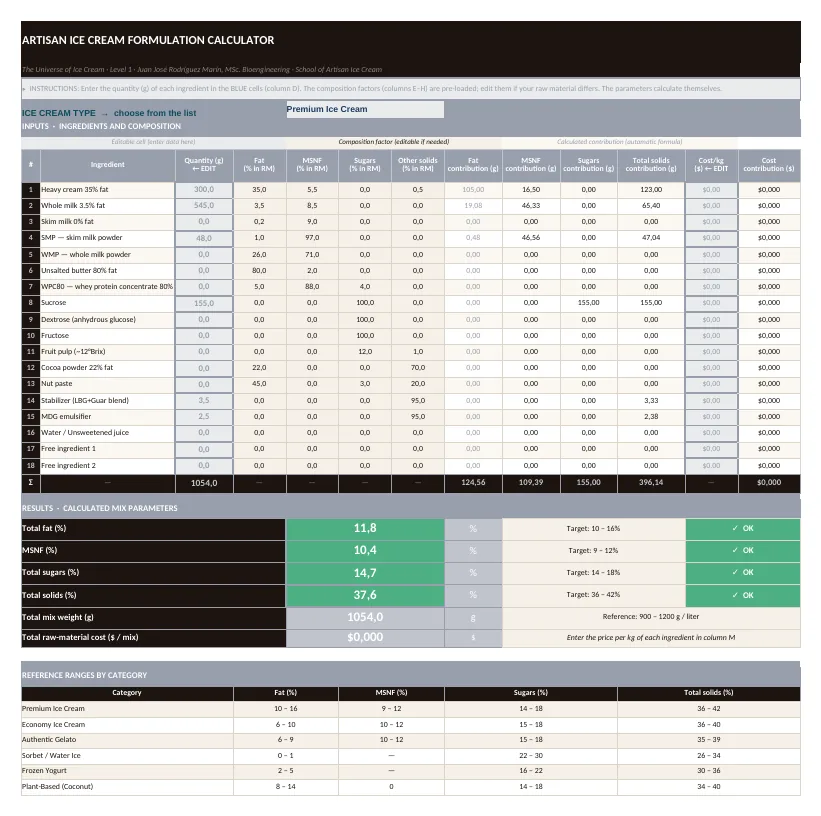
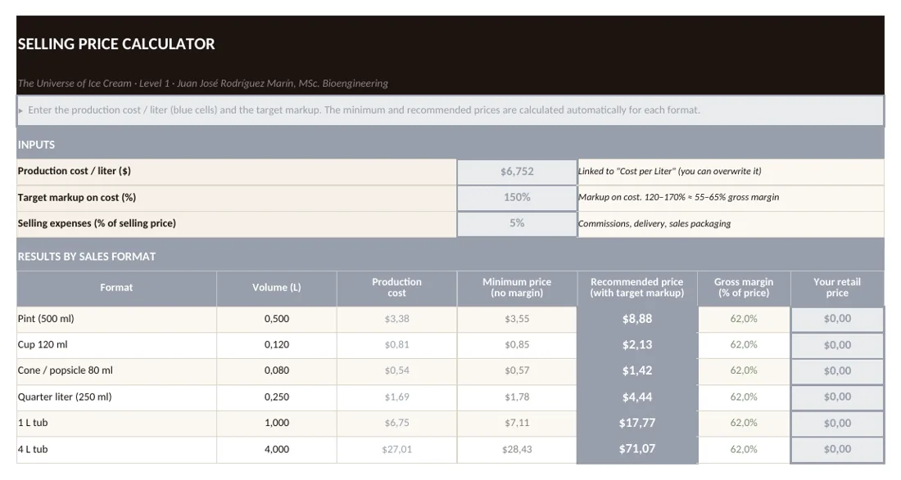
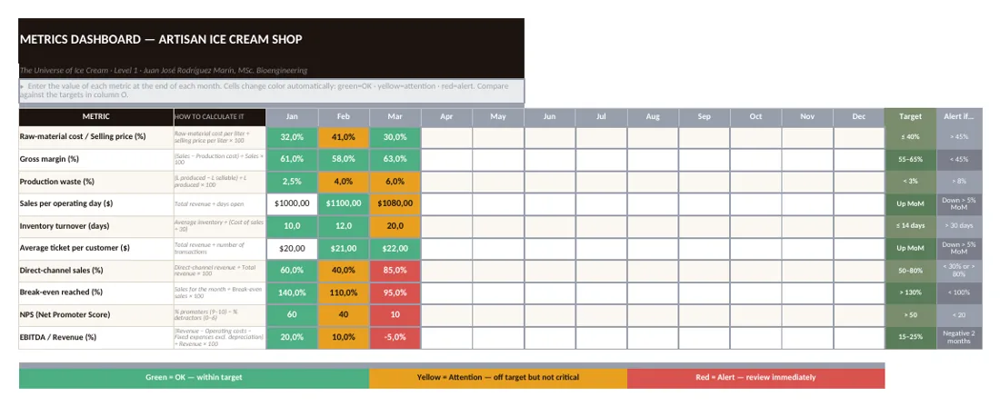

Is my mix well formulated?
Enter the grams of each ingredient and get fat, MSNF, sugars and total solids, with a traffic light for the type of ice cream: premium, gelato, sorbet and more.

Three Excel tools and a guide to formulate, cost and run your ice cream shop. Made by an agro-industrial engineer.
Each tool answers one. And they are connected: what you calculate in one flows into the next.
Enter the grams of each ingredient and get fat, MSNF, sugars and total solids, with a traffic light for the type of ice cream: premium, gelato, sorbet and more.

Cost per liter, the recommended price for each format (pint, cup, cone, tub) and your break-even point: how many liters you must sell to avoid losing money.

Ten monthly metrics with an automatic traffic light: margin, waste, turnover, break-even reached and more. Start with three if ten feels like too many.

It is the most common pricing mistake. Move the controls and see your real gross margin. It is the same formula as the toolkit's «Selling Price» sheet.
Gross margin = 1 − (1 − selling expenses) ÷ (1 + markup). A healthy shop looks for 55–65%.
One-time payment · 7-day guarantee · Excel and Google Sheets · metric units
Yes. Upload it to Drive and open it with Google Sheets. If you see a formatting difference, most formulas work the same.
Yes. Use a single currency throughout each file; monetary targets are expressed as a percentage of price.
Metric: grams, kilograms and liters. Convert your own measures (ounces, gallons) before entering them.
No. Follow the worked example and change one ingredient at a time; the traffic light tells you if you are getting closer to the range.
You have a 7-day guarantee on Hotmart.
Yes: Kit del Heladero.
Recommend the toolkit with your Hotmart affiliate link and earn 50% of each sale (about USD 10.56), with a permanent cookie. We provide texts, images and a trial copy.
See the affiliate proposal